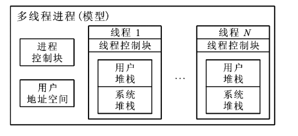
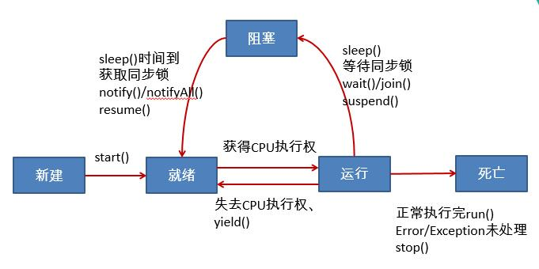

基本的进程线程概念
进程和线程算是操作系统内两个很基本、很重要的概念了，进程是操作系统中进行保护和资源分配的基本单位，操作系统分配资源以进程为基本单位。而线程是进程的组成部分，它代表了一条顺序的执行流。
系统中的进程线程模型是这样的：

进程从操作系统获得基本的内存空间，所有的线程共享着进程的内存地址空间。当然，每个线程也会拥有自己私有的内存地址范围，其他线程不能访问。
由于所有的线程共享进程的内存地址空间，所以线程间的通信就容易的多，通过共享进程级全局变量即可实现。
同时，在没有引入多线程概念之前，所谓的『并发』是发生在进程之间的，每一次的进程上下文切换都将导致系统调度算法的运行，以及各种 CPU 上下文的信息保存，非常耗时。而线程级并发没有系统调度这一步骤，进程分配到 CPU 使用时间，并给其内部的各个线程使用。
在分时系统中，进程中的每个线程都拥有一个时间片，时间片结束时保存 CPU 及寄存器中的线程上下文并交出 CPU，完成一次线程间切换。当然，当进程的 CPU 时间使用结束时，所有的线程必然被阻塞。
JAVA 对线程概念的抽象
JAVA API 中用 Thread 这个类抽象化描述线程，线程有几种状态：
NEW：线程刚被创建RUNNABLE：线程处于可执行状态BLOCKED、WAITING：线程被阻塞，具体区别后面说TERMINATED：线程执行结束，被终止
其中 RUNNABLE 表示的是线程可执行，但不代表线程一定在获取 CPU 执行中，可能由于时间片使用结束而等待系统的重新调度。BLOCKED、WAITING 都是由于线程执行过程中缺少某些条件而暂时阻塞，一旦它们等待的条件满足时，它们将回到 RUNNABLE 状态重新竞争 CPU。
此外，Thread 类中还有一些属性用于描述一个线程对象：
private long tid：线程的序号private volatile char name[]：线程的名称private int priority：线程的优先级private boolean daemon = false：是否是守护线程private Runnable target：该线程需要执行的方法
其中，tid 是一个自增的字段，每创建一个新线程，这个 id 都会自增一。优先级取值范围，从 1~10，数值越大，优先级越高，默认值为 5 。
Runnable 是一个接口，它抽象化了一个线程的执行流，定义如下：
1 | public interface Runnable { |
通过重写 run 方法，你也就指明了你的线程在得到 CPU 之后执行指令的起点。我们一般会在构造 Thread 实例的时候传入这个参数。
创建并启动一个线程
创建一个线程基本上有两种方式，一是通过传入 Runnable 实现类，二是直接重写 Thread 类的 run 方法。我们详细看看：
自定义 Runnable 实现
1 | public class MyRunnable implements Runnable{ |
1 | public static void main(String[] args) { |
运行结果：
1 | i am main Thread |
其实 Thread 这个类也是继承 Runnable 接口的，并且提供了默认的 run 方法实现：
1 |
|
target 我们说过了，是一个 Runnable 类型的字段，Thread 构造函数会初始化这个 target 字段。所以当线程启动时，调用的 run 方法就会是我们自己实现的实现类的 run 方法。
所以，自然会有第二种创建方式。
继承 Thread 类
既然线程启动时会去调用 run 方法，那么我们只要重写 Thread 类的 run 方法也是可以定义出我们的线程类的。
1 | public class MyThread extends Thread{ |
1 | public static void main(String[] args) { |
效果是一样的。
创建线程两种方式的比较
开发中优先选择，实现 Runnable 接口的方式，原因：
- 实现的方式没有类的单继承性的局限性
- 实现的方式更适合来处理多个线程有共享数据的情况
- 更符合 6 大设计原则中的
依赖倒置原则（面向接口编程）
几个常用的方法
关于线程的操作，Thread 类中也给我们提供了一些方法，有些方法还是比较常用的。
currentThread
1 | public static native Thread currentThread() |
这是一个本地静态方法，返回执行当前代码的线程。
getName 和 setName
1 | public final String getName() |
获取当前线程的名字、设置当前线程的名字。例如：
1 | public class ThreadDemo { |
运行结果：
1 | i am main Thread |
yield
1 | public static native void yield() |
这是一个本地方法，调用改方法的线程释放当前 cpu 的执行权。例如：
1 | public class ThreadDemo { |
sleep
1 | public static native void sleep(long millis) |
这是一个本地方法，用于阻塞当前线程指定毫秒时长。
start
1 | public synchronized void start() |
这个方法可能很多人会疑惑，为什么我通过重写 Runnable 的 run 方法指定了线程的工作，但却是通过 start 方法来启动线程的？
那是因为，启动一个线程不仅仅是给定一个指令开始入口即可，操作系统还需要在进程的共享内存空间中划分一部分作为线程的私有资源，创建程序计数器，栈等资源，最终才会去调用 run 方法。
interrupt
1 | public void interrupt() |
这个方法用于中断当前线程，当然线程的不同状态应对中断的方式也是不同的，这一点我们后面再说。
join
1 | public final synchronized void join(long millis) |
这个方法一般在其他线程中进行调用，指明当前线程需要阻塞在当前位置，等待目标线程所有指令全部执行完毕。例如：
1 | Thread thread = new MyThread(); |
正常情况下，主函数的打印语句会在 MyThread 线程 run 方法执行前执行，而 join 语句则指明 main 线程必须阻塞直到 MyThread 执行结束。
stop
stop1 | public final void stop() |
已过时，当执行此方法时，强制结束当前线程。
isAlive
1 | public final native boolean isAlive() |
判断当前线程是否存活。
线程的生命周期
关于Java中线程的生命周期，首先看一下下面这张较为经典的图：

Java 线程具有五中基本状态，主要包括：
- 新建状态（
New）：当线程对象对创建后，即进入了新建状态，如：Thread t = new MyThread()； - 就绪状态（
Runnable）：当调用线程对象的start()方法（t.start()），线程即进入就绪状态。处于就绪状态的线程，只是说明此线程已经做好了准备，随时等待 CPU 调度执行，并不是说执行了t.start()此线程立即就会执行； - 运行状态（
Running）：当 CPU 开始调度处于就绪状态的线程时，此时线程才得以真正执行，即进入到运行状态。注：就绪状态是进入到运行状态的唯一入口，也就是说，线程要想进入运行状态执行，首先必须处于就绪状态中； - 阻塞状态（
Blocked）：处于运行状态中的线程由于某种原因，暂时放弃对 CPU 的使用权，停止执行，此时进入阻塞状态，直到其进入到就绪状态，才有机会再次被 CPU 调用以进入到运行状态。根据阻塞产生的原因不同，阻塞状态又可以分为三种：等待阻塞：运行状态中的线程执行wait()方法，使本线程进入到等待阻塞状态；同步阻塞：线程在获取synchronized同步锁失败（因为锁被其它线程所占用），它会进入同步阻塞状态；其他阻塞：通过调用线程的sleep()或join()或发出了 I/O 请求时，线程会进入到阻塞状态。当sleep()状态超时、join()等待线程终止或者超时、或者 I/O 处理完毕时，线程重新转入就绪状态。
- 死亡状态（
Dead）：线程执行完了或者因异常退出了run()方法，该线程结束生命周期。
补充：
- 就绪状态转换为运行状态：当此线程得到处理器资源；
- 运行状态转换为就绪状态：当此线程主动调用
yield()方法或在运行过程中失去处理器资源。 - 运行状态转换为死亡状态：当此线程线程执行体执行完毕或发生了异常。
注意：当调用线程的 yield() 方法时，线程从运行状态转换为就绪状态，但接下来 CPU 调度就绪状态中的哪个线程具有一定的随机性，因此，可能会出现 A 线程调用了 yield() 方法后，接下来 CPU 仍然调度了 A 线程的情况。
If you like this blog or find it useful for you, you are welcome to comment on it. You are also welcome to share this blog, so that more people can participate in it. If the images used in the blog infringe your copyright, please contact the author to delete them. Thank you !